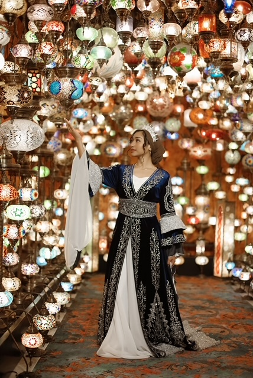
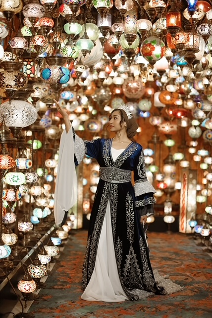
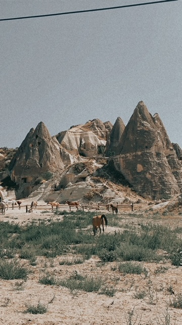
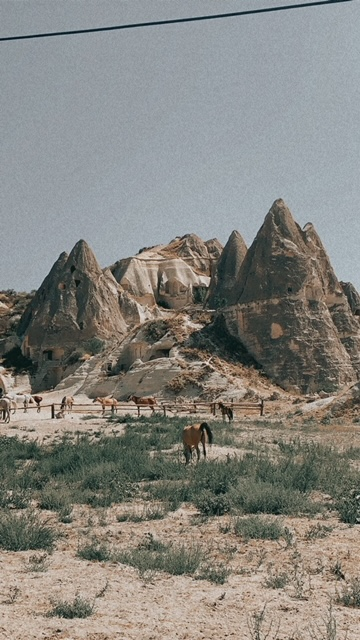

About Turkey
Officially the Republic of Turkey, is a transcontinental country located mainly in Western Asia with a portion in Southeast Europe. Throughout its history, Turkey has acted as both a barrier and a bridge between the two continents. Turkey is situated at the crossroads of the Balkans, Caucasus, Middle East, and eastern Mediterranean. It is among the larger countries of the region in terms of territory and population, and its land area is greater than that of any European state.
Basic Info
Capital: Ankara
Area: 783,356 km2 (302,455 sq mi)
Population: 84.34 Million
Currency: Turkish lira
Major Cities: Istanbul, Konya, Izmir, Ankara, Bursa, Gaziantep, Adana, Diyarbakir, Trabzon
Official Language(s): Turkish
Country Flag:

 

 
